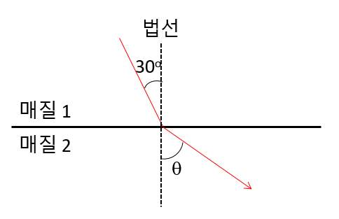

문제 1
단계 1

1) 위 그림은 굴절률이 \(\sqrt{2}\)인 매질 1와 굴절률이 1인 매질 2를 지나는 평면파의 진행 방향을 나타낸 것이다. 입사각이 \(30°\)일 때, 굴절각 \(\theta\)를 구하시오. 또한, 두 매질에서의 평면파의 진행 속도와 파장의 비를 구하시오.
2) 하위헌스(호이겐스)의 원리를 이용하여 위와 같은 굴절이 일어남을 설명하시오.
단계 2
단일 슬릿에서의 회절현상은 슬릿의 폭이 좁을수록 잘 나타난다. 전자빔과 양성자빔을 단일 슬릿을 통과시킬 때 회절 현상이 나타나는 이유를 설명하시오. 전자빔의 속도와 양성자빔의 속도가 동일할 때, 두 경우 가운데 어느 쪽의 회절 현상이 잘 나타나는지에 대해 설명하시오. (양성자의 질량이 전자의 질량보다 크다.)
단계 3
1) 레이저는 '유도 방출에 의한 빛의 증폭'이라는 말의 약자이다. 유도 방출 과정에서 빛의 증폭이 일어나는 원리를 간단히 설명하시오.
2) 빛을 이용한 디지털 정보를 저장하는 매체에서, 정보를 저장하고 재생할 수 있는 원리에 대해 설명하시오.